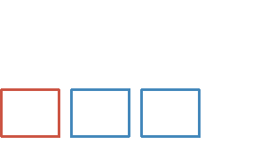
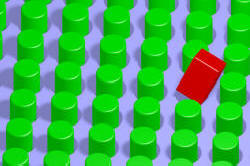

Postponement and Extrapositioning

Look at these two sentences:
- Hamilton is in third place.
- In third place is Hamilton.
If you have followed the guide to fronting on this site, linked
in the list at the end, you
might consider that this was simply a case of fronting the
prepositional phrase for emphasis and in many cases, you'd be right.
This is a form of markedness and for more on that you should consult
the guide to markedness linked in the list of related guides at the end.
A better interpretation is that we have a case of the subject being
postponed to the end of the clause. Hence the name
postponement.
There are two principles at work here which are important and
they are known as end weighting and end focus.
 |
Two important concepts |
- There is a tendency to place new or important information towards the end of a clause or sentence. This is end focus.
- There is a tendency to place heavy elements towards the end of a clause or sentence. This is end weighting.
We'll exemplify both these tricks first and then provide a bit more explanation.
End focus |
End focus is a form of marking. The usual word ordering in
English gives us, for example:
She finds taking a long hot bath after work
relaxing
which is the normal word ordering of Subject-Verb-Object-Object
complement. However, to focus on what we consider important
information, we can disturb the ordering and shift the focus to the
object clause and that gives us:
She finds it relaxing taking a long hot bath
after work
in which we have inserted a dummy it subject pronoun in
order to allow the object clause to be postpositioned.
 |
End weight |
Heaviness is the term used to describe elements which are grammatically complex or simply long. For example, we could say:
- In third place but moving up the field quite quickly now that he has new tyres is Hamilton.
but we are more likely to say:
- Hamilton is in third place but moving up the field quite quickly now that he has new tyres.
and all we have done here is shift the complex clause but moving up the field quite quickly now that he has new tyres to the end to allow the sentence to retain some balance.
 |
A little more explanation |
In order to achieve end weighting and/or end focus, there are lots of times in
English when an element of a clause or sentence is moved from its
normal position and postponed to the end.
As we have seen, in example 2. above, (In third place is Hamilton) it is the subject of the verb
(Hamilton) which has
been moved and that is a common form of postponement.
In example 4, the normal word ordering with the subject at the
beginning is preferred because the predicate is long, complex and,
therefore, heavy.
Normally, English has the canonical word order of Subject + Verb +
Object (or Complement), like this:
| Mary | gave | the man | the book |
| Subject | Verb | Indirect object | Direct object |
or like this:
| I | went | to the pub | yesterday |
| Subject | Verb | Prepositional complement | Adverbial complement |
There are times, however, when we want to depart from the normal word order in English in order to emphasise, i.e., mark, something, to provide a contrast or obey the principle of end weighting. For example:
| Mary | gave | the book | to the man she met on the train with nothing to read |
| Subject | Verb | Direct object | Indirect object |
We do not, generally speaking, encounter a sentence such as:
Mary gave the man she met on the train with
nothing to read the book
because that forces the hearer / reader, to backtrack and try
to figure out what the objects of the verb really are.
or
| Yesterday | I | went | to the new pub on the corner by the market place |
| Prepositional complement | Subject | Verb | Adverbial complement |
And, again, we do not usually encounter:
I went to the new pub on the corner by the
market place yesterday
but prefer to front the time adverbial, yesterday, and that
allows us to put the complex, heavy element at the end.
The key to understanding why we do this lies in knowing that sentences which grow to the right in English are easier to understand than sentences which grow in the centre. Compare, for example:
- The man who John met while standing at the bar in his favourite place was unhappy.
with
- While standing at his favourite place at the bar John met a man who was unhappy.
In sentence 6., the speaker has deliberately (although probably unconsciously) put the new information to the right so it's easier to understand the intention.
|  |
Extrapositioning |
The general name for the phenomenon of moving an element out of
its normal position is extrapositioning and it's
very common.
Some analyses confine this term to those times
when postponement requires the insertion of the dummy or empty it at
the beginning, effectively giving the verb two subjects. That
is not the line taken here and there is a guide, linked below, to
the use of the dummy or anticipatory it and the existential
there which both require extrapositioning.
Figure out what is happening to comply with the principle of end
weighting (or end focusing for new information) in these examples
and then click on the
 to reveal some comments.
to reveal some comments.
| It's a shame
that it's raining It's not surprising he lost his job It is not worth talking to him |
This is called
extraposition of the clause subject. All of these
sentences contain what is called the anticipatory it.
The alternative, usual, word order sounds at best clumsy,
at worst, is actually wrong. Consider:
That it's raining is a shame That he lost his job is not surprising *Talking to him is not worth. |
| It was hard
harvesting all the fruit on the trees It's usually a waste of time telling him he's wrong. It's no use arguing with her. |
Again, we have the anticipatory it
in all three examples and, again the alternative, usual word order sounds at best clumsy. Consider:
Harvesting all the fruit on the trees was hard Telling him he's wrong is usually a waste of time Arguing with her is no use What we have here is participle clause extrapositioning. |
| I dislike it
when you argue with me She finds it quite interesting working on the oil rig |
In these examples, it is the object clause which is
extrapositioned. The 'normal' ordering would be:
*?I dislike when you argue with me. She finds working on an oil rig quite interesting. The first of those is arguably unacceptable. |
| How angry is
she with you? How bored is she by working here? |
In these examples it is the prepositional phrase
which is moved from its 'normal' position.
This involves end-focus for the phrase the speaker wants
to emphasise.
Compare: How angry with you is she? How bored by working here is she? |
| She painted the entire house
herself Mary and John took the guests to the reception themselves |
In these example the reflexive pronouns,
herself and themselves are operating in
apposition to the subjects of the sentences (i.e., they
refer to the same people and are co-referential).
This, again, involves end-focus for the pronoun the speaker wants to emphasise. Compare the more awkward: She herself painted the entire house Mary and John themselves took the guests to the reception |
| What went wrong that took so long to fix? What did you say that made the child so happy? |
In the first case, the content of the subject has
been extrapositioned. Compare the doubtful:
What that took so long to fix went wrong? In the second case, it is part of the object that has been moved. Compare the very doubtful: What that made the child so happy did you say? |
| The
earthquake last week which damaged the house |
Here, the relative clause has been extrapositioned.
Compare the 'normal':
The earthquake which damaged the house last week. |
| The time has
come to tell her the truth All the cheese was bad except the parmesan A proposal has been made to close the hospital |
In these examples part of the noun phrase has been
shifted to the end, resulting in a discontinuous
noun phrase. This is another example of
speaker emphasis and end focus.
Compare the 'normal': The time to tell her the truth has come All the cheese except the parmesan was bad A proposal to close the hospital has been made |
| He produced
better work for the final photographic exhibition at the
college than anyone else had managed to do for a long time |
Here we have an example of a common
extrapositioning: that of the comparative clause.
Compare the clumsy, if not inaccurate:
He produced better work than anyone else had managed to do for a long time for the final photographic exhibition at the college |
As a summary, the following are the usual subjects of postponement and extrapositioning with some more examples:
- Clause as subject
- It's lucky that we
have enough money to get a new one
compare
That we have enough money to get a new one is lucky - Participle clauses as subjects
- It was cruel taking
all his money and leaving him with nothing
compare
Taking his money and leaving him with nothing was cruel - Clauses as objects
- She made it my responsibility
to finish the work on time
compare
She made to finish the work on time my responsibility - Prepositional phrases
- How dark is it in the depths
of winter?
compare
How dark in the depths of winter is it? - Relative clauses
- The storm late yesterday afternoon and in the evening
which interrupted the electricity
supply
compare
The storm which interrupted the electricity supply late yesterday afternoon and evening - Noun-phrase splitting
- The day will arrive
when we will all have to pay for
this stupidity
compare
The day when we will all have to pay for this stupidity will arrive - Comparative phrase splitting
- The restaurant cooked better
food for a small party of 10
than it did for the huge wedding
party
compare
The restaurant cooked better food than it did for the huge wedding party for a small party of 10 - Reflexive pronouns in apposition
- Reflexive pronouns in English have two main functions.
- They can refer to the verb acting on the subject and the
object of a clause as in, e.g.:
She poured herself a drink
The dog scratched itself
and in these cases, no extrapositioning is usual. - However, their other role is as emphasisers and, in
accordance with end focus (but not end weighting), the
pronoun is often extrapositioned, providing it is
co-referential with the subject of the
verb. We see, therefore, e.g.:
I explained the problem myself
She did all the gardening herself
rather than the more awkward:
I myself explained the problem
She herself did all the gardening
Although a reflexive pronoun can be in apposition to the object of a verb, as in, e.g.:
I told the boss herself about the problems
no extrapositioning can function when the object is the issue so we do not allow:
*I told the boss about the problems herself.
- They can refer to the verb acting on the subject and the
object of a clause as in, e.g.:
 |
Teaching in this area |
It is unlikely that postponement and extrapositioning would form a discrete part of any language syllabus but, because the phenomena are so common, we need to be aware of them and deal with them as and when they arise.
A simple place to start is with an example of post postponement or extrapositioning and get the learners to figure out which form is the more natural and why. This is an exercise in encouraging a feeling for naturalness or Sprachgefühl.
| All the following are possible in English. Which sounds best to you? | What changes to the grammar do you see? | |
| Sentence | Tick ( |
Grammar changes |
| At the party sitting on the floor in the corner and talking to his friends was John | ||
| John was at the party sitting on the floor in the corner and talking to his friends | ||
| It was thought to be impossible for anyone to lift it | ||
| For anyone to lift it was thought to be impossible | ||
| It doesn't matter what you say to him | ||
| What you say to him doesn't matter | ||
| It seems likely that the government will introduce a new tax on tobacco and alcohol next March | ||
| That the government will introduce a new tax on tobacco and alcohol next March seems likely | ||
The next step is to remove the more natural forms and get the learners to rephrase the sentence to make it sound more natural. This will often require the dummy it pronoun.
One of the difficulties with understanding sentences in which elements have been shifted to comply with end focus and end weight is the need to identify which is the subject and which the object of the verb, especially when the noun phrases have ended up split into two sections. This is especially relevant to learners who need to access complex academic or formal texts. One solution is a little practice:
| Identify the subject, verb and object in these sentences. This first one is an example. | |||
| Sentence | Subject | Verb | Object |
| The government has accepted all the findings of the report except those that will mean a loss of tax revenue. | The government | has accepted | all the findings of the report except those that will mean a loss of tax revenue |
| All the company's employees at the meeting accepted in principle the proposals including the new pay rates except those who stood to lose income. | |||
| It would be a pity if the company completely ignored the findings of such a thorough investigation. | |||
| It will not particularly help the situation that most of the main participants will be on holiday when the meeting is held to consider the next steps. | |||
Another solution is to use academic or formal texts to identify
the main constituents of clauses and sentences as part of a reading
skills development programme.
It is a fairly straightforward and useful tactic to include where
opportunity presents some exercise on identifying (i.e., noticing)
the important constituents as one reads.
| Related guides | |
| the word order map | for links to other guides in this area |
| cleft sentences | explaining how we get from, e.g., She liked the hotel to What she liked was the hotel |
| circumstances | analysing prepositional and adverbial phrases somewhat differently |
| coordination | which all consider the ordering of clauses |
| subordination | |
| conjunctions | |
| existential it and there | for an analysis of what are sometimes called 'dummy' subjects |
| markedness | for more on how English deploys marked and unmarked forms and word ordering |
| fronting | which explains how items can be moved to the beginning of a clause or sentence for effect |
| theme and rheme | which considers why the leftmost constituent of a clause is often the most important |